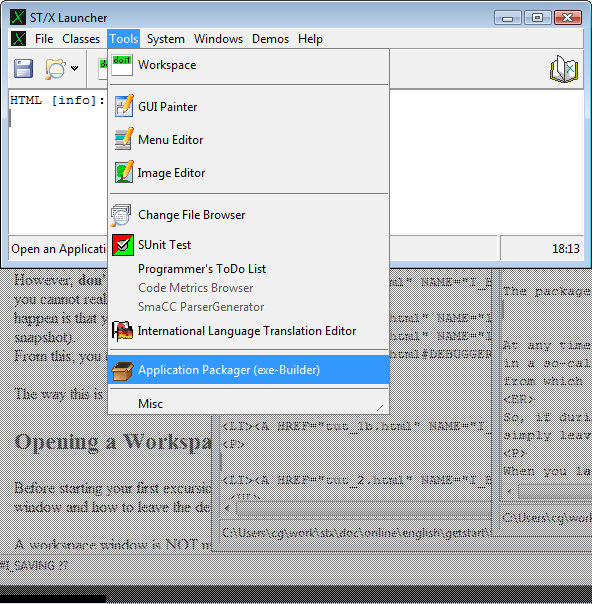
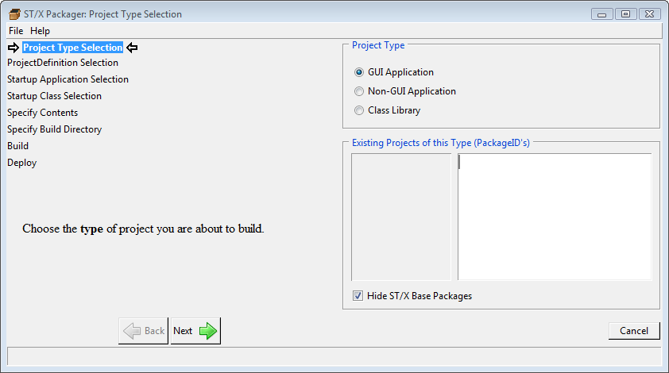
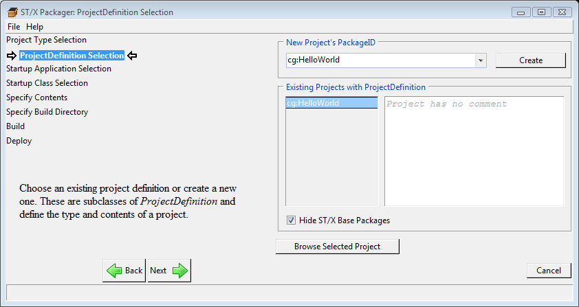
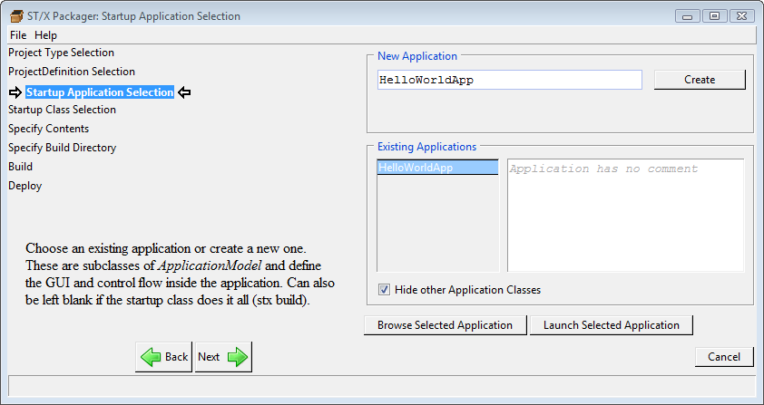
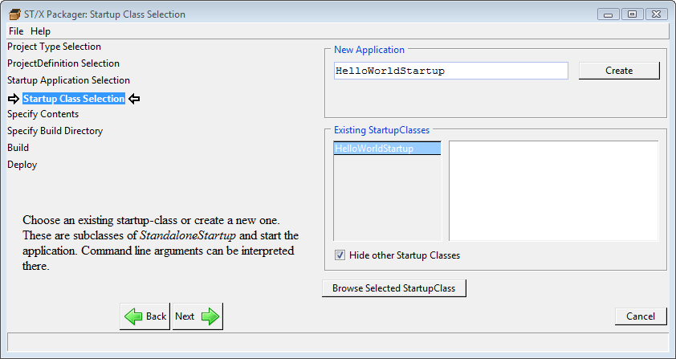
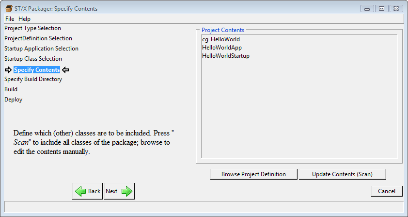
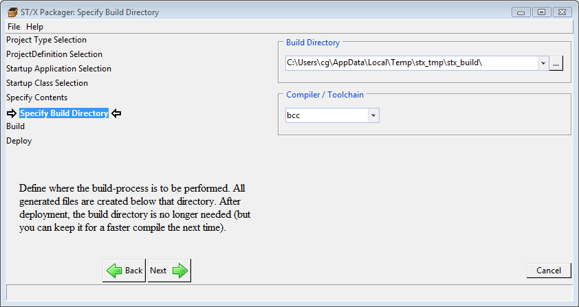
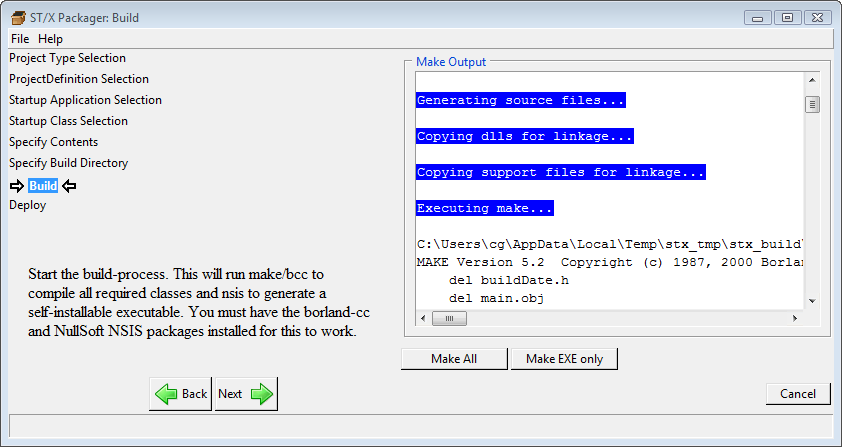
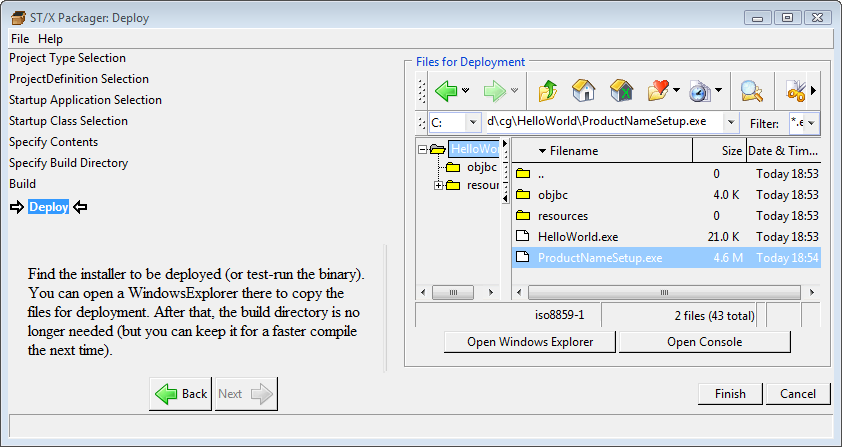

Attention Windows Users:
Before trying the packager, make sure that you have the
"Free Inprise/Borland Compiler Tools" (now Embarcadero)
and the "NullSoft Installer" packages installed.
New ST/X versions also allow building with the Microsoft Visual C/C++
(also Visual Studio / Visual Studio Express).
Attention Unix Users:
The screenshots below have been taken for a build under Windows. Things are
slightly different under Unix. See the end of this document for Unix packaging infos.


Check the "GUI-Application" Toggle (if it is not already checked), and proceed by clicking on the "Next"-button to:

Here, you would be presented with a list of existing applications - if there were any.
After an initial start, chances are high, that this list is empty.
Therefore, we tell the packager, to create a new project for us.
Enter the project's name into the upper input field.
The format of the project-name is somewhat formalized;
it must consist of a company part and a project-path part, separated by a colon.
For this example, enter "xxx:HelloWorld",
replacing "xxx" with your name or initials, and press the "Create" button.
ST/X will create an application-definition for you (which is initially empty).
After a short delay, the name should appear in the list of existing projects.
Experienced Smalltalkers may now click on the "Browse Selected Project" button, to
peek into the created definition. All others may simply proceed by clicking on the "Next"-button.
That button is disabled until a project is selected.

Next, we define the application class. That is the class which specifies the
layout of the GUI and the user-interaction. In technical terms: it will be a subclass
of ApplicationModel.
The packager is able to create an initial (empty) application framework for us:
enter a useful name such as "HelloWorldApp" into the upper input field,
and press the "Create"-button.
After a short delay, the name of your new application-class appears in the list. You can open your application for a test-run by clicking on the "Launch" button. Or else, you can open a Systembrowser on it, and modify the Menu, the GUI or its behavior there. We will skip this here, but you will read more about this in a later chapter.
When you are happy with the look of your HelloWorld-Application, press the "Next"-button, to get to this page:

The so called "StartUp class" is the class which initially gets control when the program
is started as a standalone executable
(i.e. outside the
The startup class is probably not needed for very small helloWorld-type
toy applications (so we don't really need it here).
However, in a real world application, it will check and scan for command line arguments,
check for configuration files being present or perform other required setup actions
before actually launching the application.
Here, we specify a simple startup class, which we ask the packager to create for us;
enter "HelloWorldStartup" as name, and click on "Create"
The created class contains a single method,
which opens the application window.
All of the real functionality is inherited from its superclass.
Please take a look at this StandaloneStartup-class later.
Then proceed to the next screen:

In this page, other classes which should be packaged together with the application can be specified. In our tiny HelloWorld example, there is nothing else needed, but real world applications usually consist of more than one class.
We skip this page here, press the "Next"-button, and proceed directly to:

here you get a chance to define the toolchain to use and to change the build directory.
Although offered in the menu, please do not select Visual-C (vc) or LCC.
These tools are not yet fully integrated (as of September 2009, when this document was written).
Usually,
the automatically generated temporary directory is fine,
and you don't have to do anything here
(change it, if the choosen directory is on a slow or full drive).
We immediately proceed to the next page:

That is where the real build-process-show starts. Click on "Make All" and wait for a short time (depending on the speed of your disk and cpu, this may take from a few seconds to a few minutes). Most of the time is spent in the final packaging process (Nullsoft, package or dmg generation). Therefore, if you are only interested in an executable to try, but not in a self installing deployable, click on the "Make EXE only" button instead (which typically does its work in a few seconds).
If all went well (there are no red error messages in the console output), proceed to the final step:

That final page lists the generated executables and allows for a Windows Explorer
to be opened on the build-directory (in order to copy the "XXXSetup.exe" file to
whereever it is going to be deployed to).
For a test run of the generated executable,
open a Windows explorer (or Finder) there,
and double-click on "HelloWorld.exe".
For deployment, all you need is the "XXXSetup.exe". Do not deploy the
"HelloWorld.exe" alone
- it will look rather ugly,
because a few additional helper and configuration files
(especially the GUI-style and the language definitions) are needed
by the exe.
By the way:
The name "ProductName.exe" results from not defining a proper product name in the
ProjectDefinition class. Open a browser on that class and change the name as required.
A later version of the application packager will include a form for these additional
items (icon, product name, company name, etc.)

Copyright © Claus Gittinger Development & Consulting
Copyright © eXept Software AG
<cg@exept.de>